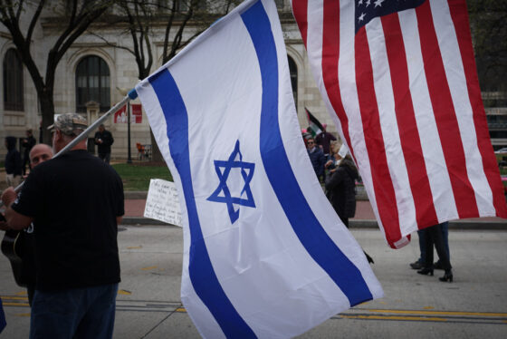
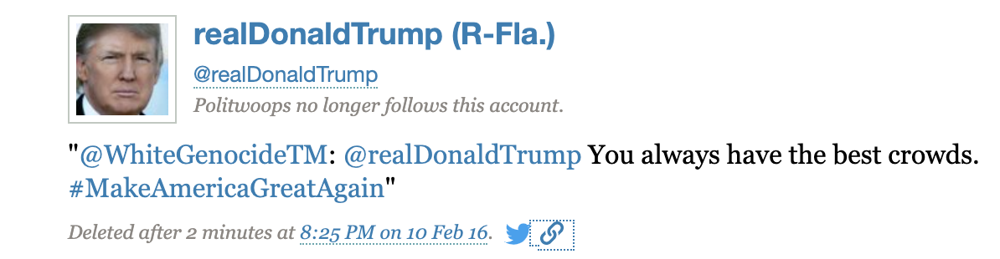

Antisemitism on the Rise: How Figures and Events Spark Hate
In the fall of 2022, antisemitism was in the spotlight. With the rapper Ye(formerly known as Kanye West) making outwardly antisemitic and hateful comments, media coverage of the issue has skyrocketed. And in the past few years, so has antisemitic incidents.
According to the Anti-Defamation League, there was 2,717 antisemitic incidents recorded in 2021. That’s 1,330 more than the yearly average over the past 10 years, which was 1,387.
That number is also the highest amount of antisemitic hate crimes recorded in a year in the United States since the A.D.L. began collecting data in 1979. It contributes to a 5-year rise in antisemitism and all hate crimes in the U.S.
Back to the subject of Ye, individuals studying hate crimes and antisemitism say that famous figures making anti-semitic comments have contributed to the 5-year rise. “Elite cues are incredibly powerful. I do believe that elite figures such as Donald Trump and Kanye West spreading antisemitic tropes and hate does lead to an increase in hate crimes,” said Ian Glazman, an SU graduate student who specializes in hate crime and white supremacy research.
With Ye’s comments being so recent, there is little to no statistics to show the effects of his rhetoric. However, others who study the topic of hate crimes and antisemitism told me that they think former president Donald Trump has to do with the rise.
“I think that Donald Trump and the individuals that he supports and certainly does not condemn contribute to it… as a nation, we were presumably a society moving beyond this kind of prejudice and hate against ethnic or religious groups,” said Syracuse University professor Margaret Susan Thompson, who teaches classes on hate crimes. “Some of the things that he would tweet and retweet from the time he started running in 2015… if the president of the united states can say these things, then people think it’s ok, he gives them permission.”
Thompson is referring to tweets that said things like “Jews have to get their act together and appreciate what they have in Israel - before it’s too late,” and one that depicted former presidential candidate Hillary Clinton as “the most corrupt candidate ever” written in a Star of David.

Donald Trump retweets "WhiteGenocide", an account known for antisemitic tweets, via ProPublica Twitter Archives
Data that I’ve collected backs Thompson and Glazman’s claims. Below is a line graph that shows antisemitic hate crime over the 2010s in New York City, the nation’s largest concentrated Jewish population.
A visible rise in incidents in 2016 occurs at the same time that Trump won the presidential election, and continues to rise throughout his presidency. The rise hit a peak in early 2019, just a few months after the Tree of Life Synagogue shooting in Pittsburgh killed 11 Jewish Americans.
Statistics like the one above show that major incidents like the 2018 Pittsburgh shooting typically cause a spike in all incidents related to that type of hate. According to Thompson, large incidents inspire more small ones. “People get ideas… There's been a lot of research on lone wolves, or people who carry out these attacks by themselves. A lot of them can be inspired by major incidents, you see somebody carry out an act of violence, and you think ‘oh I could do that too’.”
Below is a bar graph of the increase in the top three most frequent bias-related incidents between 2018 and 2019. After the Tree of Life shooting, anti-semitic incidents increased largely, while others did not.
Sydney Schroeder, the president of Syracuse University’s Jewish Student Union, shared her experiences growing up as a Jewish American during the time of major hate incidents. “I went to a jewish high school, and after the tree of life shooting happened, security got ramped up,” said Schroeder. “When we see something big happen, the jewish community gets scared. And that’s because when conversation like that is normalized, especially on social media and from people like Trump, action is taken.” Glazman also attributed the increasing hate crimes to social media, saying “the internet has proved to be an incredible boom for the spread and normalization of hateful and extremist ideologies.”
A study done by Israeli researchers Gabriel Weimann and Natalie Masri found that TikTok saw a 912% increase in antisemitic comments in 2021.
According to Thompson, the influence of elite figures contributes to the rise in online antisemitism. “Kanye West has millions of followers on instagram, so when he makes a statement, millions of people are exposed to it,” said Thompson. “The fact that he’s saying things like ‘I’m a big fan of Hitler’, it makes people think that if he can say those things, they can too as someone hiding in their parents’ basement.” Schroeder says that the increase in hate on social media normalizes antisemitism – but she's taken it upon herself to educate others. “I think people have become desensitized to it, because it’s not impacting them. And I think it’s my job as a jewish woman to raise awareness about it.”